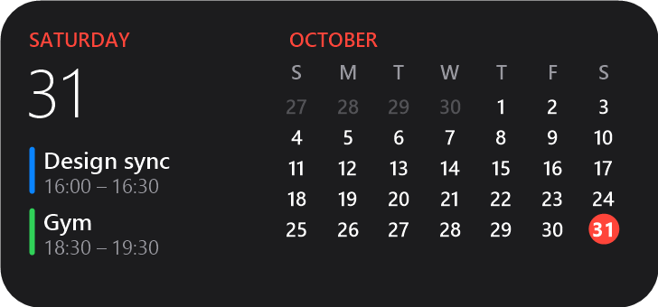
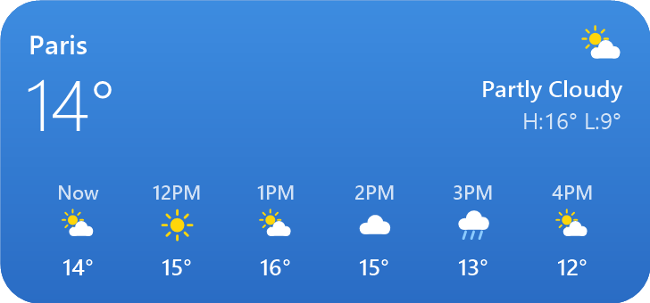
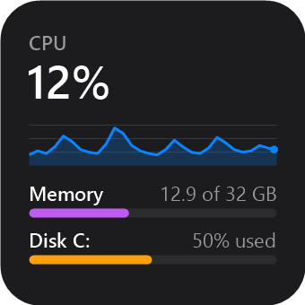
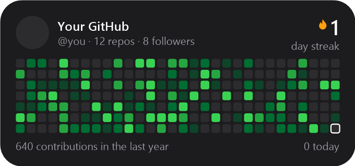
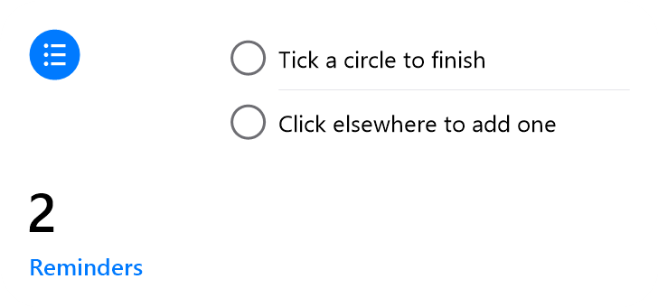

Your desktop, at a glance.
Widgets for Windows that stay out of your way.
Free and open source · Windows 10 and 11 · Nothing else to install




Light. Really light.
Every widget runs in one small native process.
33 MB
of memory with seven widgets on the desktop
0.3%
of one CPU core while they update
0
runtimes to install. It uses the .NET that ships with Windows
Light or dark.
Or Vibrant, with your wallpaper blurred behind it.
Private by default.
Tokens and calendar links are encrypted for your Windows account. Nothing is read until you choose.

Everything you glance at.
Built in, and ready the moment you drag them out.
- ClocksAnalog, dark and world clocks
- CalendarToday, next events and the month, from any .ics link
- WeatherNow and the next hours, from Open-Meteo
- Focus TimerStart, pause, and it keeps going across restarts
- Reminders and NotesType straight on the desktop
- SystemCPU, memory and disk
- Now PlayingSpotify, browsers, Media Player
- Photo FrameA picture from your folder, GIFs too
- GitHubProfile, streak and contributions
- Formula 1Race hub and live timing
Made by people. Read by a person.
Community widgets are plain C#. The owner reads every version before it appears, and the app checks it's exactly that code before it runs.
Make your own.
One C# file. Draw with GDI+, and Desk Widgets compiles it on the PC.
[DeskWidget(Name = "Hello", Description = "The smallest community widget")]
public sealed class HelloWidget : WidgetWindow
{
public HelloWidget(Section s) : base(s) { }
protected override Size Measure() { return new Size(Px(170), Px(170)); }
protected override void Draw(Graphics g)
{
g.DrawString("Hello", font, Brushes.White, Px(16), Px(16));
}
}
Get Desk Widgets.
One file. Run it, and it's in your Start menu.